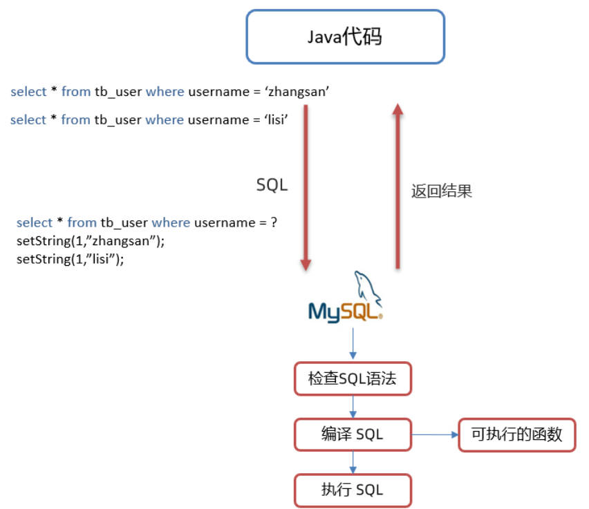
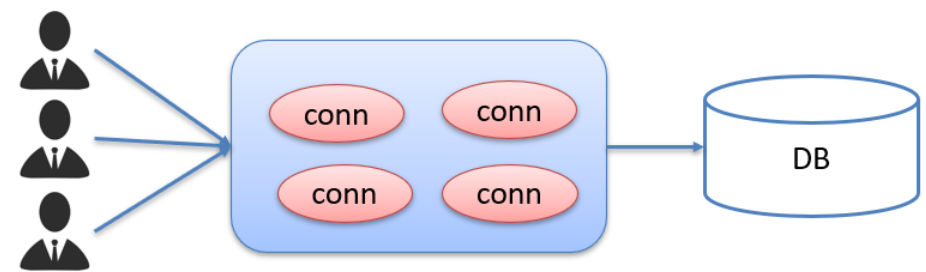

JDBC
现在企业早就不使用这种繁琐的技术了，但是学过了JDBC才能更好的理解后面的开发框架。
JDBC
JDBC是一款使用 Java语言赖操作关系型数据库的一套API；它为不同的关系型数据库提供了一套标准的API接口。

JDBC快速入门
（1）导入驱动包：操作哪个关系型数据库就需要导入该数据库的驱动包。将mysql驱动包放在模块的lib目录下，并添加为库文件；
mysql驱动jar包下载地址：https://dev.mysql.com/downloads/connector/j/
（2）代码步骤：
1 | public class JDBCDemo { |
JDBC API
1、DriverManager驱动管理类
注册驱动 （mysql5自动注册）
获取数据库的连接
1
Connection conn = DriverManager.getConnection(url, username, password);
2、Connection数据库连接对象
获取执行sql的statement对象
普通执行
1
Statement statement = conn.createStatement();
预编译执行 – 防止sql注入
1
PreparedStatement statement = conn.prepareStatement(sql); // 预编译直接将sql语句传进来
事务管理
Mysql事务管理(mysql中默认自动提交): ①开启事务：Begin; 或 Transaction; ②提交事务：Commit; ③回滚事务：Rollback;
Connection中定义了3个对应的方法：开启事务：true表示自动提交事务，false表示手动提交事务，而开启事务需要将该参数设为为false。
1
conn.setAutoCommit(false);
提交事务
1
conn.commit();
回滚事务
1
conn.rollback();
事务管理的意义：
1 | try { |
3、Statement对象
用来执行sql代码。
执行数据增删改以及数据库、表、列的定义：
1
int count = statement.excuteUpdate(sql);
表中查询
1
ResultSet rs = statement.executeQuery(sql);
4、ResultSet结果集对象
封装了sql查询语句的结果。
遍历查询结果中所有数据：
1 | // 1 光标向下移动一行，并且判断当前行是否有数据 |
5、PreparedStatement对象
预编译sql语句并执行，防止sql注入。
sql注入：通过操作输入来修改事先定义好的SQL语句，用以达到执行代码对服务器进行攻击的方法。
模拟sql注入
1
2
3String name = "xxxxxx";
String pwd = "' or '1' = '1";
String sql = "select * from tb_user where username = '" + name + "' and password = '" + pwd + "'";上面的sql代码是将name和pwd拼接而成的，拼接后的sql代码为：
1
select * from tb_user where username = 'xxxxxx' and password = '' or '1' = '1'
PreparedStatement先前使用
Statement对象执行sql代码的步骤：① 定义参数以及sql语句
②
statement.executeUpdate(sql)执行使用
PreparedStatement预编译执行步骤：① 定义sql语句，占位符用 ‘?’代替
②
pstmt对象设置 ‘?’ 参数指代的值：pstmt.setString(index,参数);③
pstmt.executeUpdate();执行，这里注意不需要传入sql语句了，因为在定义pstmt对象的时候已经传入sql语句进行预编译了1
2
3
4
5
6
7
8
9
10
11
12
13
14
15
16
17
18
19
20
21
22
23
24
25
26
27
28
29public class textPreparedStatement {
public static void main(String[] args) throws Exception {
// 注册驱动(可省略)
Class.forName("com.mysql.cj.jdbc.Driver");
// 获取链接
String url = "jdbc:mysql://127.0.0.1:3306/db1";
String username = "xxxxx";
String password = "xxxxx";
Connection conn = DriverManager.getConnection(url, username, password);
String sql = "select * from tb_user where username = ? and password = ?";
PreparedStatement pstmt = conn.prepareStatement(sql);
String name = "zhangsan";
String pwd = "' or '1' = '1";
pstmt.setString(1,name);
pstmt.setString(2,pwd);
ResultSet resultSet = pstmt.executeQuery();
if(resultSet.next()){
System.out.println("登陆成功!");
}else{
System.out.println("登陆失败!");
}
resultSet.close();
pstmt.close();
conn.close();
}
}
6、PreparedStatement原理
开启预编译：在url中加入参数：useServerPrepStmts=true;
好处：① 预编译，性能更高； ② 防止sql注入
 在获取PreparedStatement对象时，将sql语句发送给mysql服务器进行检查、编译（这些步骤很耗时），执行时就不用再进行这些步骤了，速度更快。
数据库连接池
数据库连接池（Connection Pool）是一种复用 Connection 的组件，它可以避免反复创建新连接，提高JDBC代码的运行效率。
在执行JDBC的增删改查的操作时，如果每一次操作都来一次打开连接，操作，关闭连接，那么创建和销毁JDBC连接的开销就太大了。为了避免频繁地创建和销毁JDBC连接，我们可以通过连接池复用已经创建好的连接。
数据库连接池的实现
标准接口：DataSource
1 | DataSource datasource = Connection getConnection(); |
不需要通过 DriverManager 对象获取 Connection 对象，而是通过连接池（DataSource）获取 Connection 对象。
Druid数据连接池 – alibaba
导入jar包：下载地址 https://repo1.maven.org/maven2/com/alibaba/druid/
编写配置文件
druid.properties

- 测试代码
1 | public class testDruid { |
Druid连接池配置成功：